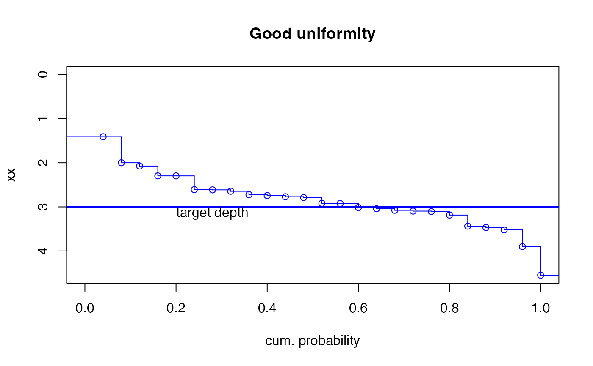

sfplot.RdUses an `stats::ecdf` object to plot a step function plot with cumulative frequency on x axis and input array (catch can depths) on y axis with y-axis reversed (min(y)= 0 at top of y-axis). Top of plot represents soil surface.
sfplot(x,target=NA,xlab=NULL,ylab=NULL,...)numeric array
target, a constant, e.g., target depth of irrigation.
label for x axis, standard default provided.
label for y axis, e.g., depth applied. Default is name of object x if not supplied.
further graphical parameters to pass to internal calls to plot.default
Plot includes step function lines unlike rotecdf. A minimum y of 0 is forced such that the plot can be interpreted as 0 being ground surface. If "target" is supplied, a horizontal line at the value of target is drawn. Points and area below the target line indicate water applied in excess of the target amount.
Step function plot as empirical cumulative distribution function with x on y-axis and f(x), i.e., cum. prob., on x-axis.
Wrapper functions for internally called plot and sub-plot functions within `rotecfd` prevent warnings and errors for graphical parameters passed via `...` that are not recognized by subplolot functions, i.e., abline, text. Therefore not all graphical parameters passed via `...` will be realized in the generated plot.
target<-3
# generate data with mean of target amount and high variability (non-uniformity)
x<-rnorm(25,3,1.75)
sfplot(x,target,ylab="depth applied (caught)")
# generate data with mean of target amount and low varibility (uniformity)
xx<-rnorm(25,3,0.5)
sfplot(xx,target)#no y axis label provided - defaults to array object name
#customize graphical parameters
sfplot(xx,target,main="Good uniformity",xlab="cum. probability",lwd=2, col="blue")
